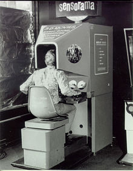
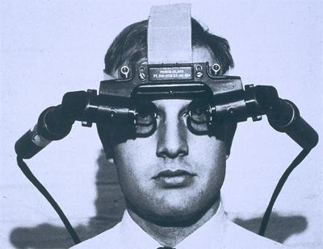
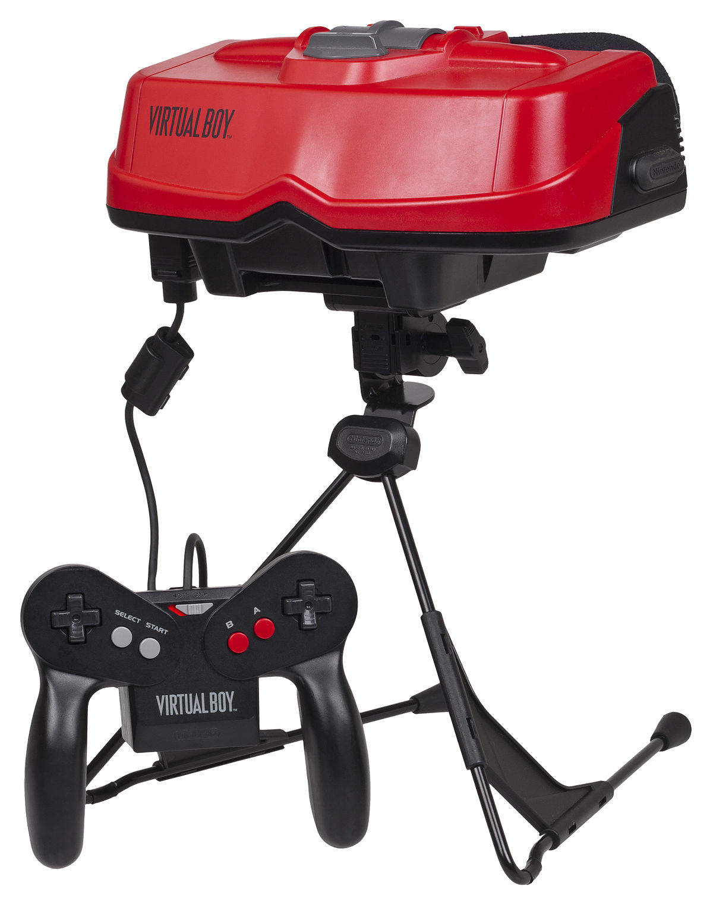
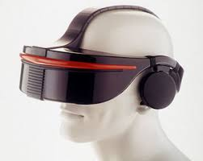
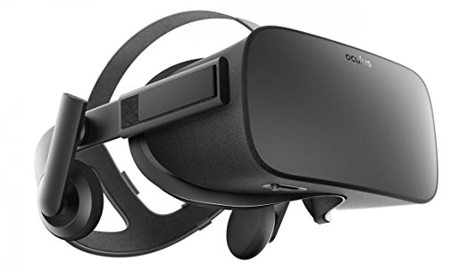
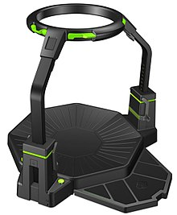
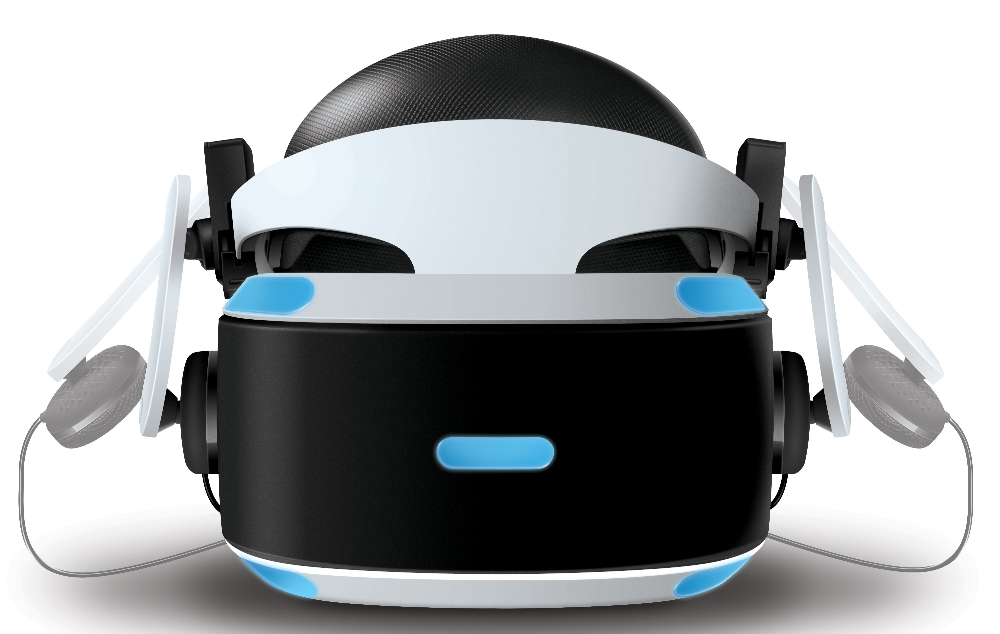
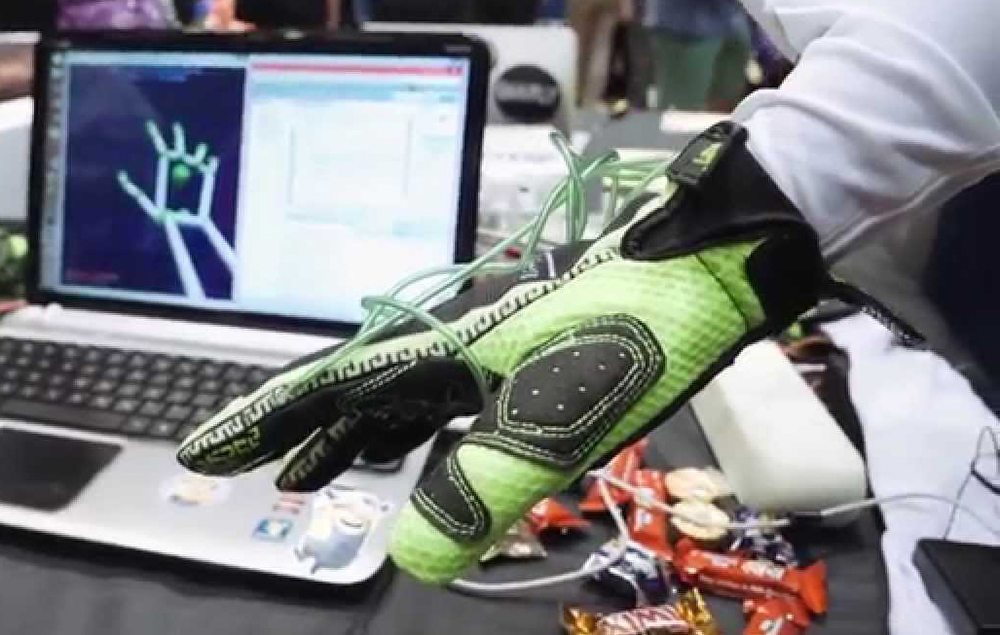

Technology like the Virtuix Omni and the Omni hands are amazing, innovative creations. The future of virtual reality and the future of Omni technology is looking extremely bright. Every year we get new concepts on how to bring the virtual world to life and new brains working hard to make those concepts into reality. A virtual reality. The evolution of virtual reality technology has been outstanding.
As can be seen in the table below, with every added layer of new, bright ideas, we are brought closer and closer to full immersion into the virtual world. Virtual reality technology has come so far and has improved so much so rapidly that with every improvement or addition to technology like the Virtuix Omni and the Hands Omni, we become so much closer to fully experiencing an entirely new world as if it were our own.
| The Evolution of Virtual Reality Technology | ||||||||
|---|---|---|---|---|---|---|---|---|
| Year | 1957 | 1965 | 1985 | 1993 | 2012 | 2016 | 2017 | In Development |
| Name | Sensorama | Ultimate Display | Nintendo Virtual Boy | Sega VR Glasses | Oculus Rift | Virtuix Omni | PSVR | Omni Hands |
| Image |  |  |  |  |  |  |  |  |